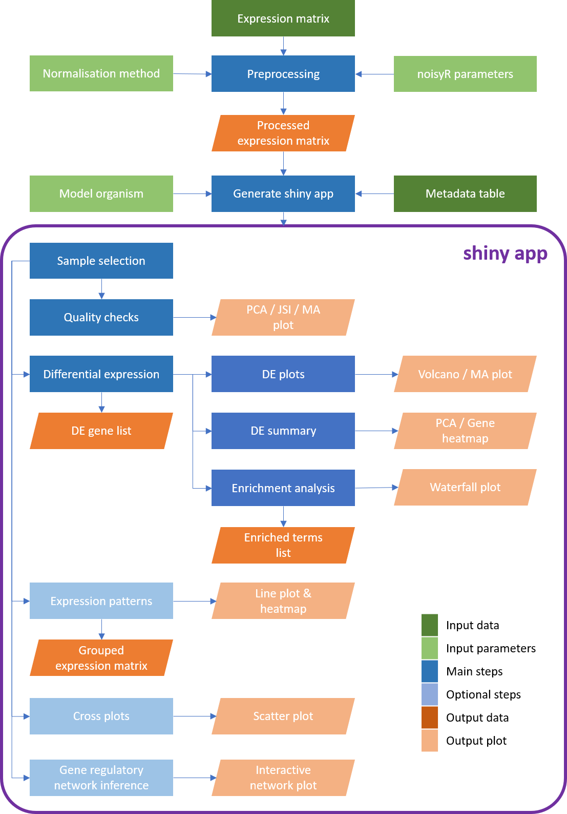
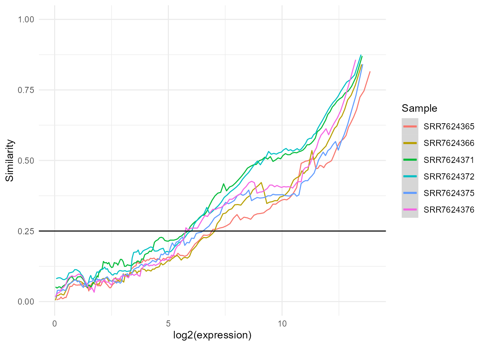
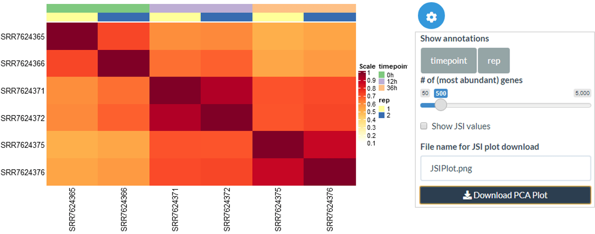
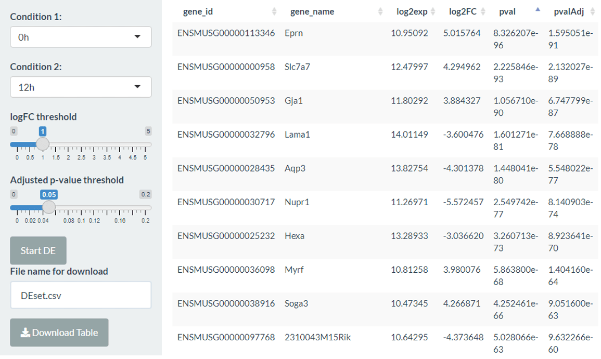
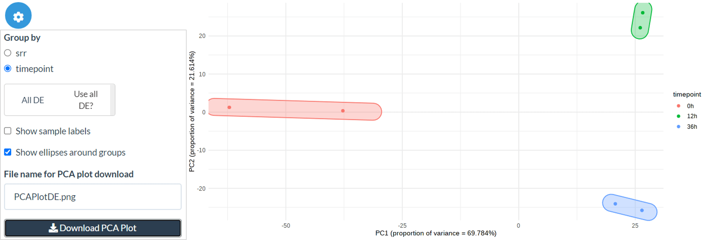
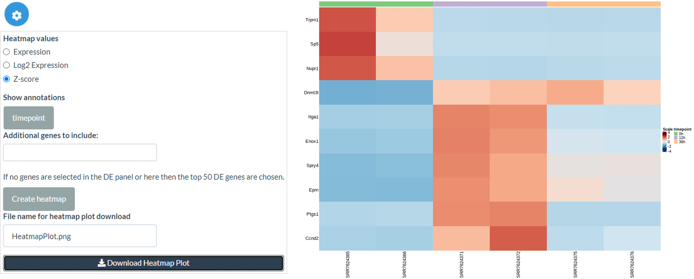
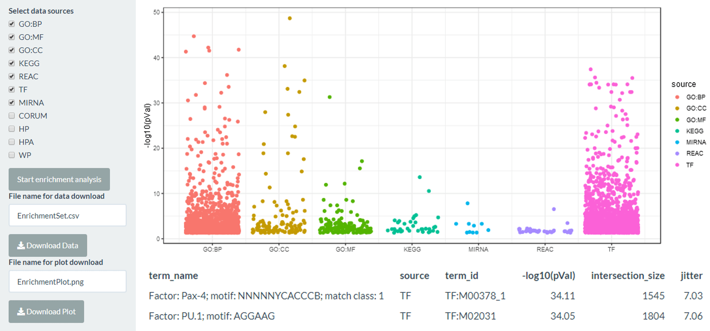
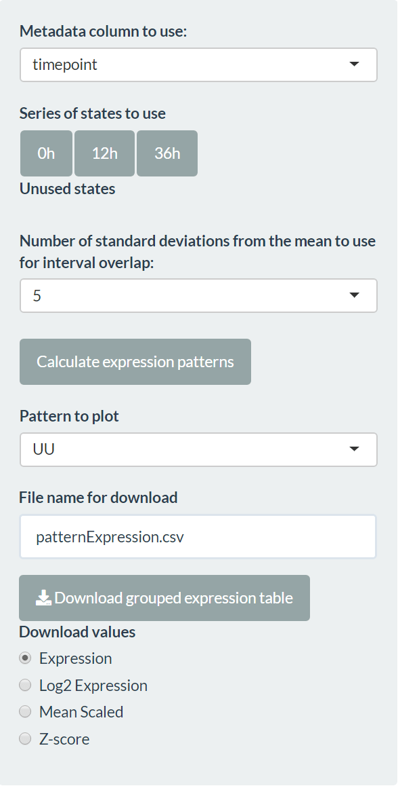
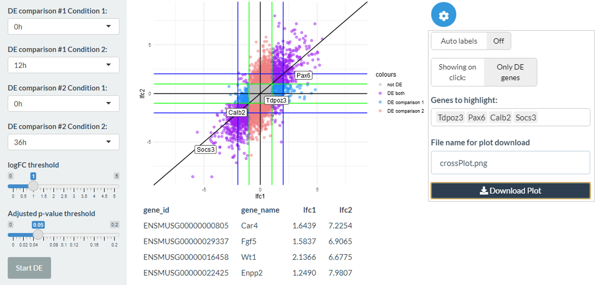
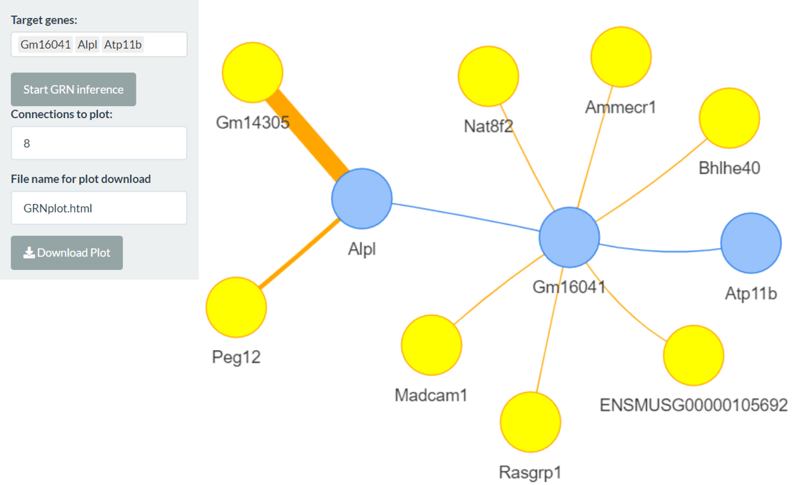

bulkAnalyseR: An easy way to analyse and share bulk mRNA-Seq data
Source:vignettes/bulkAnalyseR.Rmd
bulkAnalyseR.RmdBulk mRNA-seq experiments are essential for exploring a wide range of biological questions. To bring the data analysis closer to its interpretation and facilitate both interactive, exploratory tasks and the sharing of (easily accessible) information, we present bulkAnalyseR an R package that offers a seamless, customisable solution for most bulk RNAseq datasets. By integrating state-of-the-art approaches without relying on extensive computational support, and replacing static images with interactive panels, our aim is to further support and strengthen the reusability of data. bulkAnalyseR enables standard analyses of bulk data, using an expression matrix as starting point. It presents the outputs of various steps in an interactive web-based interface, making it easy to generate, explore and verify hypotheses. Moreover, the app can be easily shared and published, incentivising research reproducibility and allowing others to explore the same processed data and enhance the biological conclusions.

Installation
To install the package, first install all CRAN dependencies:
packages.cran <- c("ggplot2",
"shiny",
"shinythemes",
"gprofiler2",
"stats",
"ggrepel",
"utils",
"RColorBrewer",
"circlize",
"shinyWidgets",
"shinyjqui",
"dplyr",
"magrittr",
"ggforce",
"rlang",
"glue",
"matrixStats",
"noisyr",
"tibble",
"ggnewscale",
"ggrastr",
"visNetwork")
new.packages.cran <- packages.cran[!(packages.cran %in% installed.packages()[, "Package"])]
if(length(new.packages.cran))
install.packages(new.packages.cran)Then install bioconductor dependencies:
packages.bioc <- c("edgeR",
"DESeq2",
"preprocessCore",
"AnnotationDbi",
"GENIE3",
"ComplexHeatmap")
new.packages.bioc <- packages.bioc[!(packages.bioc %in% installed.packages()[,"Package"])]
if(length(new.packages.bioc)){
if (!requireNamespace("BiocManager", quietly = TRUE))
install.packages("BiocManager")
BiocManager::install(new.packages.bioc)
}Finally, you can install the latest stable version of bulkAnalyseR from GitHub:
if (!requireNamespace("devtools", quietly = TRUE))
install.packages("devtools")
devtools::install_github("Core-Bioinformatics/bulkAnalyseR")Preprocessing
First, load bulkAnalyseR:
Loading an expression matrix
For this vignette we are using a subset of the count matrix for an experiment included in a 2019 paper by Yang et al. Rows represent genes/features and columns represent samples:
counts.in <- system.file("extdata", "expression_matrix.csv", package = "bulkAnalyseR")
exp <- as.matrix(read.csv(counts.in, row.names = 1))
head(exp)
##> SRR7624365 SRR7624366 SRR7624371 SRR7624372 SRR7624375
##> ENSMUSG00000102693 2 0 0 0 0
##> ENSMUSG00000051951 6 4 2 0 47
##> ENSMUSG00000102851 0 0 0 0 0
##> ENSMUSG00000103377 0 0 2 0 8
##> ENSMUSG00000104017 0 0 0 2 0
##> ENSMUSG00000103025 0 0 0 0 0
##> SRR7624376
##> ENSMUSG00000102693 0
##> ENSMUSG00000051951 37
##> ENSMUSG00000102851 1
##> ENSMUSG00000103377 6
##> ENSMUSG00000104017 2
##> ENSMUSG00000103025 3Defining metadata
The subset of the dataset we are using has samples from 3 timepoints: 0h, 12h and 36h, each with 2 biological replicates. We define a metadata table detailing which sample correspond to which timepoint:
meta <- data.frame(
srr = colnames(exp),
timepoint = rep(c("0h", "12h", "36h"), each = 2)
)This metadata table should be a data frame containing at minimum two columns: the first column must contain the column names of the expression.matrix, while the last column is assumed to contain the experimental conditions that will be tested for differential expression.
Denoising and normalisation
Before using the expression matrix to create our shiny app, some preprocessing should be performed. bulkAnalyseR contains the function preprocessExpressionMatrix which takes the expression matrix as input then denoises the data using noisyR and normalises using either quantile (by default) or RPM normalisation (specified using normalisation.method parameter). By specifying output.plot = TRUE, you can also print the expression-similarity line plots from noisyR to console and you can specify further parameters from the noisyR noisyr_counts.
exp.proc <- preprocessExpressionMatrix(exp, output.plot = TRUE)
##> >>> noisyR counts approach pipeline <<<
##> The input matrix has 38705 rows and 6 cols
##> number of genes: 38705
##> number of samples: 6
##> Calculating the number of elements per window
##> the number of elements per window is 3870
##> the step size is 193
##> the selected similarity metric is correlation_pearson
##> Working with sample 1
##> Working with sample 2
##> Working with sample 3
##> Working with sample 4
##> Working with sample 5
##> Working with sample 6
##> Calculating noise thresholds for 6 samples...
##> similarity.threshold = 0.25
##> method.chosen = Boxplot-IQR
##> Denoising expression matrix...
##> removing noisy genes
##> adjusting matrix
##> >>> Done! <<<
##> Performing quantile normalisation...
##> Done!
It is not recommended to use data which has not been denoised and normalised as input to generateShinyApp. You can also perform your own preprocessing outside preprocessExpressionMatrix.
Creating a shiny app
The central function in bulkAnalyseR is generateShinyApp. This function creates an app.R file and all required objects to run the app in .rda format in the target directory. The key inputs to generateShinyApp are expression.matrix (after being processed using preprocessExpressionMatrix) and metadata. You can also specify the title of the app (which will appear in the navigation bar at the top of the app) with app.title, the directory where the app should be saved with shiny.dir and the shiny theme you wish to use (‘flatly’ is the default, you can find the other options here). It is also recommended that you specify the organism on which your data was generated, firstly using the organism parameter using the gprofiler2 naming convention e.g. ‘hsapiens’,‘mmusculus’ (see here for the full list of organisms and IDs), and secondly specifying the database for annotations to convert ENSEMBL IDs to gene names e.g. org.Hs.eg.db - the full list of bioconductor packaged databases can be seen using this command:
BiocManager::available("^org\\.")The dataset in this example was generated on M. musculus so we would generate the app using this function call (note that the org.Mm.eg.db needs to be installed):
generateShinyApp(
expression.matrix = exp.proc,
metadata = meta,
shiny.dir = "shiny_Yang2019",
app.title = "Shiny app for visualisation of three timepoints from the Yang 2019 data",
organism = "mmusculus",
org.db = "org.Mm.eg.db"
)If no organism is specified for g:profiler then the enrichment tab will be automatically excluded. If no model organism database is specified then the row names of the expression matrix will be used throughout. It is recommended to use ENSEMBL ids as the row names and supply the model organism through the org.db parameter if your organism is among the ones provided, to ensure compatibility.
This will create a folder called shiny_Yang2019 in which there will be 2 data files expression_matrix.rda and metadata.rda and app.R which defines the app. To see the app, you can call shiny::runApp(‘shiny_Yang2019’) and the app will start. The app generated is standalone and can be shared with collaborators or published online through a platform like . This provides an easy way for anyone to explore the data and verify the conclusions, increasing access and promoting reproducibility of the bioinformatics analysis.
By default, the app will have 9 panels: Sample select, Quality checks, Differential expression, Volcano and MA plots, DE summary, Enrichment, Expression patterns, Cross plots, GRN inference. You can choose to remove one or more panels using the panels.default parameter.
generateShinyApp(
expression.matrix = exp.proc,
metadata = meta,
shiny.dir = "shiny_Yang2019_onlyQC_DE",
app.title = "Shiny app for visualisation of three timepoints from the Yang 2019 data",
organism = "mmusculus",
org.db = "org.Mm.eg.db",
panels.default = c('QC','DE')
)See the following sections for more details about the default panels:
Sample Select
This tab allows you to select a subset of samples to use for the analysis. In particular this allows you to exclude low quality samples (which you could discover using QC tab) or focus on particular parts of the data. Once you have selected the samples you want, make sure to press the ‘Use the selected sample!’ button to confirm your choice. If you do not use this button or select samples then all samples will be used.

Quality check (QC)
The Quality Check (QC) tab includes a Jaccard Similarity Index (JSI) heatmap, and a PCA dimensionality reduction, with groups based on the metadata information. This enables a high-level overview of the similarity across samples, usually reflecting the experimental design quite closely and serving as a sanity check. Within this panel, there is also the option to show the MA plot between any 2 columns - this can be used to further investigate any sample similarity or differences found through the JSI and PCA plots.
Jaccard Similarity Index
Within the JSI plot, you can change the order of samples using an ordering of metadata columns as well as specifying the number of top abundance genes that should be used to calculate the JSI. Finally, you can choose whether JSI values should be shown on the heatmap.

Differential expression (DE)
The differential expression (DE) tab can be used to compare any of the conditions from the columns of the metadata table using the edgeR or DESeq2 packages with customisable parameters (log2 fold change and adjusted p-value threshold). The output is a list of differentially expressed genes along with log2 fold changes and adjusted p-values. Within the app, the differentially expressed genes can be explored using an interactive table (sorted by absolute log2 fold change) and this can also be saved as a comma-separated file.

In this tab, you can also select genes of interest by clicking on the table, which can be used in the DE summary and Volcano/MA tabs. There is also a button to choose the top 50 DE genes (by absolute log2 fold change) or reset the selection.
Volcano/MA plots
Assuming differential expression has been performed, the Volcano/MA panel then visualises the DE genes, allowing interactive exploration of the data by searching for specific genes of interest or using the selected top DE genes and clicking on genes on the plot itself to gain more information and generate hypotheses.
DE summary
The DE summary panel allows further visualisation using the genes called DE or selected by the user in the DE panel.
Post-differential expression PCA
Firstly, we can create a PCA using only the DE genes or using the selected genes from the DE panel. You can also create the PCA on only the user-selected DE genes by deselecting the ‘Use all DE?’ option. As in the QC PCA plot, you can colour points by your chosen metadata columns and add/remove sample labels and group ellipses.

Expression heatmap
Secondly, we can create heatmaps for expression levels (raw expression level, log2 expression level or Z-score) of selected genes. By default the top 50 DE genes are used, but if users select genes in the DE panel then these are used instead. Also, further genes can be added by name in the Additional genes box. As in the JSI, you can change the order of samples using an ordering of metadata columns.

Enrichment
The enrichment tab uses the differentially expressed genes to run an enrichment analysis using g:profiler with a user selected output of the standard GO terms, the KEGG and reactome pathway databases, and miRNA and transcription factor lists. The plot shows the log10 BH-corrected p-value for each term, separated by category. The background set used is all the genes in the expression matrix - if noisyR preprocessing is used then this will be all the genes above the s/n threshold.
The output is both the results table from g:profiler which can be downloaded as well as a jitter plot which can be clicked to identify the most significant terms.

Expression patterns
The expression pattern tab allows the creation of expression patterns to identify potential genes of interest across a variety of conditions. The most common application of this is a time series, but it could be suitable for another logical progression between conditions. To define the series, the user must select a column of the metadata and drag states into the “Series of states to use” area.
The pattern identification is done by calculating a confidence interval for each gene in each condition, using all samples in that condition and the number of standard deviations away from the mean provided. The pattern between two consecutive conditions is defined as straight (S) if the intervals overlap and up (U) or down (D) if they don’t. The full expression pattern is the concatenation of individual patterns (for example, “UUS” for 4 conditions).
The grouped expression matrix can then be downloaded, showing which pattern each gene was assigned to. Plots are also created for the genes in the selected pattern (“Pattern to plot”).

Cross plots
The cross plot tab allows you to compare two differential expression analyses against each other, for example two comparisons of interest or the same comparison using edgeR and DESeq2. The plot shows the log2 fold change of the two differential expression calls on each axis. Genes which are DE in both comparisons are coloured purple, in comparison 1 but not comparison 2 in blue and in comparison 2 but not comparison 1 in red. You can label selected genes and click on genes on the plot itself to gain more information and generate hypotheses.

Gene regulatory networks (GRN)
The GRN tab enables the creation of small gene regulatory networks (GRNs) to facilitate further exploration and hypothesis generation based on genes of interest. Target genes can be selected and a small network with them as targets can be generated by clicking the “Start GRN inference” button. The number of regulators can then be adjusted and the plot downloaded in interactive html format. Note that target genes can also regulate each other if the selected genes are functionally similar.

Adding extra panels
Alongside the default 8 panels, you can also define your own panels and add them to the app. As an example, we could add an extra QC panel (in this case it will be exactly the same):
generateShinyApp(
expression.matrix = exp.proc,
metadata = meta,
shiny.dir = "shiny_Yang2019_ExtraQC",
app.title = "Shiny app for visualisation of three timepoints from the Yang 2019 data - extra QC",
organism = "mmusculus",
org.db = "org.Mm.eg.db",
panels.extra = tibble::tibble(
UIfun = "QCpanelUI",
UIvars = "'QC2', metadata",
serverFun = "QCpanelServer",
serverVars = "'QC2', expression.matrix, metadata"
)
)If you need to add extra data or package imports for the extra panel(s) then you can do this using the data.extra and packages.extra parameters. Make sure you have the extra data loaded when you create the app. For example:
extra.data1 = matrix(rnorm(36),nrow=6)
extra.data2 = matrix(rnorm(60),nrow=10)
generateShinyApp(
expression.matrix = exp.proc,
metadata = meta,
shiny.dir = "shiny_Yang2019_ExtraData",
app.title = "Shiny app for visualisation of three timepoints from the Yang 2019 data - extra QC",
organism = "mmusculus",
org.db = "org.Mm.eg.db",
panels.extra = tibble::tibble(
UIfun = "QCpanelUI",
UIvars = "'QC2', metadata",
serverFun = "QCpanelServer",
serverVars = "'QC2', expression.matrix, metadata"
),
data.extra = c("extra.data1", "extra.data2"),
packages.extra = "somePackage",
)